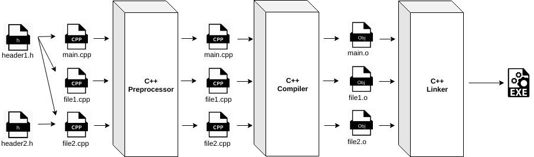

C++تحميل و تنصيب أدوات C++
طريقة عمل برنامج مكتوب بلغة C++
الكود الذي تكتبه على الكمبيوتر لا يعمل بشكل مباشر بل يمر بعدة مراحل تباعاً حتى يعمل تماماً كما في الصورة التالية.

إذاً يمر الكود المكتوب بلغة C++ بثلاث مراحل حتى يصبح في النهاية برنامج يمكن تشغيله على الحاسوب.
في البدابة يقوم الـ preprocessor بتشذيب وتجهيز الملفات النصية لتدخل بعدها في عملية التجميع ( Compiling ) حيث يتم تحويل الملفات النصية الى ملفات ( نوعها Binary ) يفهمها الحاسوب مع المحافظة على بعض صفات الكود مثل أسماء المتغيرات والدوال ومن ثم يقوم الموصل ( Linker ) بوصل كل أجزاء البرنامج المختلفة ودمجها مع بعضها لتصبح ملف تنفيذي واحد ( نوعه EXE ) يمكن تشغيله في أي وقت مثل أي تطبيق عادي.
معلومة تقنية
الـ preprocessor, الـ Compiler و الـ Linker هي مجرد برامج صغيرة تعمل مع بعضها بشكل متناسق حتى تحول كل الكود الذي قمنا بكتابته في المشروع لبرنامج عادي يمكن تشغيله بنقرة واحدة.
تجهيز بيئة العمل لتطوير تطبيقات بلغة C++
يوجد الكثير من بيئات العمل التي تمكنك من العمل على تطوير البرامج بلغة C++ مهما كان نظام التشغيل الذي تستخدمه مثل:
Eclipse - CodeBlocks - CLion - Dev C++ الخ..
في هذه الدورة سنعلمك كيف تقوم بتحميل, تنصيب و استخدام برنامج CodeBlocks المجاني من أجل كتابة و تجربة الكود حاسوبك الشخصي.
كما سنعلمك أيضاً كيف تستخدم خدمة أونلاين في حال أردت كتابة كود C++ بدون تنصيب أي برنامج على حاسوبك.
ملاحظة
في حال كنت تستخدم نظام ويندوز و تستخدم برنامج Visual Studio فيمكنك استخدامه نفسه لكتابة الكود بدل برنامج CodeBlocks.
لمعرفة كيف تكتب كود C++ باستخدام برنامج Visual Studio إبحث في يوتيوب عن: visual studio setup for c++ و شاهد أي فيديو تريد.
في حال كنت تستخدم نظام ماك و تستخدم برنامج XCode فيمكنك استخدامه نفسه لكتابة الكود بدل برنامج CodeBlocks.
لمعرفة كيف تكتب كود C++ باستخدام برنامج XCode إبحث في يوتيوب عن: xcode setup for c++ و شاهد أي فيديو تريد.
خطوات تحميل و تنصيب و فتح برنامج CodeBlocks
شاهد الخطوات التالية لتتعلم كيف تقوم بتحميل و تنصيب إصدار برنامج CodeBlocks الملائم لحاسوبك.
ملاحظة: سبب إستخدامنا لبرنامج CodeBlocks هو أنه مجاني, سهل الإستخدام و يساعد كثيراً في كتابة الكود.
شاهد الخطوات »
خطوات إنشاء مشروع جديد و تشغيله في برنامج CodeBlocks
هنا وضعنا خطوات إنشاء مشروع ( أي برنامج ) جديد في CodeBlocks.
إنتبه: عليك إتباع هذه الخطوات في كل مرة تريد فيها تجربة الكود على الكمبيوتر.
شاهد الخطوات »
خطوات تحديد إصدار المترجم ( Compiler)
هنا وضعنا خطوات تحديد إصدار المترجم و هذا الأمر سيساعدك على اختيار الإصدار الذي تريده بكل سهولة.
كما أننا سنحدد الإصدار الذي سنعمل عليه لذلك عليك اتباع هذه الخطوات الآن و اتباعها كلما أردت تغيير إصدار المترجم.
شاهد الخطوات »
الشكل العام لأي برنامج مكتوب بلغة C++
الملف الأساسي في المشروع يجب أن يكون شكله كالتالي.
#include <iostream>
int main()
{
// هنا يجب أن تضع الأوامر التي ستتنفذ عند تشغيل البرنامج
return 0;
}
فائدة السطر using namespace std;
عند إنشاء أي مشروع جديد تلاحظ في الملف main.cpp أنه يوجد الأمر using namespace std; في السطر الثالث كالتالي.
#include <iostream>
using namespace std;
int main()
{
cout << "Hello world!" << endl; // نستخدمه لطباعة أي نص نريد للمستخدم لكن لا تشغل بالك به الآن cout << الأمر
return 0;
}
لماذا أجد الأمر using namespace std; موضوع ضمن كود المشروع إذا لم يكن وجوده إجبارياً؟
في البداية هذا السطر معناه أنك تريد تضمين الأشياء الموجودة بداخل المكتبة std بشكل مباشر في المشروع.
في حال أردت إزالة هذا السطر ستكون مجبر على تحديد إسم المكتبة التي تستخدم منها الأمر cout و cin و غيرها من الأوامر التي سنتعلمها في دروس لاحقة.
الآن سيكون شكل الكود كالتالي في حال أردت إزالة الأمر using namespace std; منه.
#include <iostream>
int main()
{
std::cout << "Hello world!" << endl; // مكان وجود هذا الأمر C++ حتى نحدد لمترجم لغة cout قبل كلمة std:: لاحظ أننا أضفنا
return 0;
}
في هذه الدورة سنقوم بتضمين المكتبة std في أغلب الأمثلة حتى يكون حجم الكود أصغر و أسهل عليك في القراءة, أي سنبقي الأمر using namespace std; في الكود.
ملاحظة
من الآن و حتى إنتهاء سلسلة دروس C++ ستكون دروسك عبارة عن شروحات صغيرة لكل مفهوم جديد تتعلمه, و بهذه الطريقة ستفهم كل مبادئها.

 محرر الويب
محرر الويب نظام الألوان
نظام الألوان محول الوحدات
محول الوحدات محلل عناوين الشبكات
محلل عناوين الشبكات